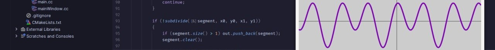
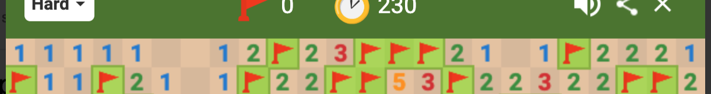

About my code
My language stack mainly includes the following languages:
- C/C++
- 64-bit ASM
- Python
- Java
I also use/learn other languages, though not as often
Notable projects
GrapherToolkit

GrapherToolkit is a C++/GTKMM app that graphs a given function f(x). It includes a written from scratch library that parses a c-string into a recursive object representation of said function. Built for Summer 2026 class of PW
AutoMinesweeper

A lot less serious of a project of mine, AutoMinesweeper is a Python script uses simple algorithms and PyAutoGUI to play the game of Google's browser game Minesweeper. It is, however, purely deterministic, and will never attempt to guess
More to come...